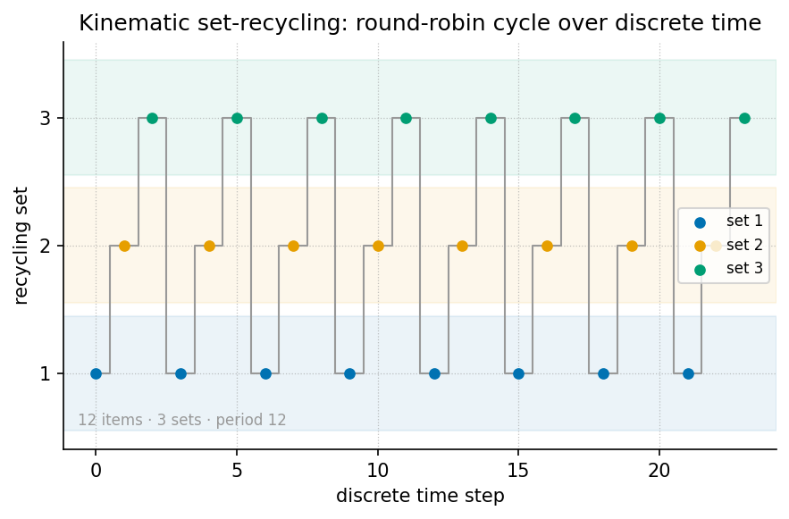

Kinematic Set-Recycling: The Truckee Protocol

textbook.models.round_robin, with
item \(i\) landing in set \(i \bmod 3\).Level 1/3 · 30 min read · 45 min lecture · Prerequisites: [@sec:part_II_singularity-crystal], [@sec:part_I_topology-void]
Learning Objectives
By the end of this chapter you should be able to:
- State the paper’s central filing: one physical set yields multiple experiential realities through velocity, which the corpus files as an octave multiplier under \(\Phi \approx 1.618\) [mendez2026setRecycling].
- Write and use the Fourier velocity scale fixture — spectrum argument \(\omega/v\) with amplitude \(1/\lvert v\rvert\) — and evaluate it numerically for a \(\Phi\)-spaced family of speeds.
- Recite the three experiential octave states (stationary · pedestrian · cyclist) and place them on the \(\Phi\)-power octave ladder of [@eq:part_III_kinematic-recycling_octave-ladder].
- Apply the round-robin recycling rule of [@eq:part_III_kinematic-recycling_round-robin]
— implemented as
textbook.models.round_robin— to partition one asset set into \(n\) recycled sets with zero new assets. - Restate the paper’s own scope disclaimers precisely: catalog architecture on engine shelf #21, not psychophysics lab QED, not infinite XR memory savings, and not NOAA causation by AR14524/AR14527.
- Explain where the Truckee protocol sits in the engine shelf ordering and which companion chapters consume its constructs.
Study Blueprint
- Big idea: One physical set, recycled through velocity states, yields many experiential octaves without buying a single new asset — the corpus files this as kinematic set-recycling [mendez2026setRecycling].
- Core concepts: kinematic-set-recycling, octave, catalog-architecture, engine-shelf, fair-exchange.
- Quantitative lens: the Fourier velocity scale fixture ([@eq:part_III_kinematic-recycling_velocity-scale]), the octave ladder ([@eq:part_III_kinematic-recycling_octave-ladder]), and the round-robin recycling rule ([@eq:part_III_kinematic-recycling_round-robin]).
- Data skill: partition a finite asset set
round-robin by hand and verify the partition against
textbook.models.round_robin; evaluate \(1/\lvert v\rvert\) amplitudes for \(\Phi\)-spaced speeds. - Common misconception to repair: reading “velocity becomes an octave multiplier” as a psychophysical law. The paper itself files it as catalog architecture, and the Fair Exchange clause applies.
- Primary lab: [@sec:lab_part_III_kinematic-recycling].
- Question bank: [@sec:q_part_III_kinematic-recycling].
- Bridge to computation:
textbook.models.round_robin,octave_term,descriptive_statistics.
Opening Vignette: Same river. Different speed. New theater.
Along the Truckee River corridor — the paper’s opening scene — the same stretch of water and trail is one physical set, yet standing beside it, walking it, and riding it are three unmistakably different experiences. The ship blog files this plainly: walk, stand, or ride, and velocity becomes an octave multiplier under \(\Phi \approx 1.618\) — “you don’t need infinite worlds to feel infinite realities” [mendez2026setRecycling]. The set is recycled; the theater changes; nothing new was built.
Orientation
This chapter formalises Kinematic Set-Recycling (ship blog, September 2026, engine shelf #21), the paper in which the corpus extends its octave vocabulary from static filing structures — the digit×octave register bins of [@sec:part_0_tensor-decoupling] — to kinematic states of a single physical set [mendez2026setRecycling]. The headline filing is C-kinematic-set-recycling-1: one physical set yields multiple experiential realities via velocity. Where earlier shelf entries catalogued what a set is (its prime address, its net-zero balance), this entry catalogues what a set can be experienced as when the mover’s speed changes.
The paper is deliberately modest about mechanism. It defines no new physics; it files a vocabulary — octave multiplier, experiential octave states, Fourier velocity scale — and a workflow claim: a Lattice Chat / XR pipeline can present multiple “theaters” from one asset set, a zero-new-asset framing [mendez2026setRecycling]. Our job as textbook authors is to formalise those filings precisely, work them numerically with the book’s tested model functions, and preserve the paper’s own honesty-first scope disclaimers verbatim.
Three constructs carry the chapter. First, the Fourier velocity scale fixture ([@eq:part_III_kinematic-recycling_velocity-scale]): the spectrum argument is \(\omega/v\) and the amplitude is \(1/\lvert v\rvert\), so velocity enters the formalism twice — once as a stretching of the spectral argument and once as a scaling of amplitude. Second, the octave ladder ([@eq:part_III_kinematic-recycling_octave-ladder]): the three experiential states are indexed by powers of \(\Phi\), the corpus’s fractal constant. Third, the round-robin recycling rule ([@eq:part_III_kinematic-recycling_round-robin]): the deterministic, asset-free partition that lets one set serve many states.
The Paper in the Corpus
Kinematic Set-Recycling sits at engine shelf
#21 — filed after the Singularity Crystal
paper (#20) [mendez2026singularityCrystal] and before the
corpus’s Honesty meta entries [mendez2026setRecycling]. That placement
matters: the recycling protocol consumes the Singularity Crystal’s
net-zero discipline (a recycled set is an inflow that cancels the
outflow of new-asset procurement, exactly the ledger shape of
net_zero_balance in [@sec:part_II_singularity-crystal])
and it inherits the Topology
of the Void reading of zero as a live state rather than an
absence [mendez2026topologyVoid] — the stationary mover is the \(v \to 0\) state of the same set,
not a different set.
The paper’s self-designation is catalog architecture
— explicitly not psychophysics lab QED, not infinite
XR memory savings, and not NOAA causation by the active regions
AR14524/AR14527 mentioned on the page [mendez2026setRecycling]. The Fair Exchange clause — the
corpus’s standing honesty mechanism (see [@sec:part_0_orientation]) —
applies in full. The paper ships with a whitepaper surface
(whitepaper-surface.html?id=synthobs-kinematic-set-recycling-truckee-2026-09)
and a standalone reference implementation at
github.com/FractiAI/synthobs-kinematic-set-recycling-truckee,
re-runnable as
npm run research:synthobs-kinematic-set-recycling-truckee
[mendez2026setRecycling]. Within this book, the recycling rule is backed
by the tested function textbook.models.round_robin.
graph TD
A["One physical set (Truckee corridor / one asset bundle)"] --> B["Velocity as octave multiplier under Phi"]
B --> O0["State 0 · stationary (v -> 0)"]
B --> O1["State 1 · pedestrian"]
B --> O2["State 2 · cyclist"]
O0 --> R["Round-robin recycling: sigma(i) = i mod 3"]
O1 --> R
O2 --> R
R -->|"zero new assets"| A[@fig:part_III_kinematic-recycling] draws the recycling cycle as the round-robin partition it computes: nine indexed items of one set, three experiential sets, item \(i\) in set \(i \bmod 3\).
Core Constructs
The Fourier velocity scale
The paper’s “What landed” list files a Fourier velocity scale fixture: the spectrum argument is \(\omega/v\) and the amplitude is \(1/\lvert v\rvert\), with \(\omega\) the spectral (frequency) argument and \(v\) the velocity of the mover [mendez2026setRecycling]. We formalise the fixture by factoring out an unspecified base spectral profile \(F\), which the corpus leaves abstract:
\[ \tilde{S}_v(\omega) \;=\; \frac{1}{\lvert v \rvert}\; F\!\left(\frac{\omega}{v}\right) \] {#eq:part_III_kinematic-recycling_velocity-scale}
[@tbl:part_III_kinematic-recycling_velocity-scale] collects the parameters. The fixture is structural: velocity rescales both the argument and the amplitude, so any \(\Phi\)-ratio between two speeds moves the fixture by one \(\Phi\)-step in each factor simultaneously.
| Symbol | Meaning | Units |
|---|---|---|
| \(\omega\) | spectral (frequency) argument | 1/time |
| \(v\) | velocity of the mover | length/time |
| \(F(\cdot)\) | base spectral profile (corpus leaves it abstract) | arbitrary |
| \(\tilde{S}_v(\omega)\) | velocity-scaled spectrum value | arbitrary |
Worked numerically. Take the unit-base profile \(F(x) = \cos x\) (a standard, plainly illustrative choice — the corpus does not pin \(F\)) and evaluate at \(\omega = 1\) for the \(\Phi\)-spaced speed family \(v \in \{1,\ \Phi,\ \Phi^2\}\), using the pinned values \(\Phi \approx 1.618034\) and \(\Phi^2 \approx 2.618034\):
- \(v = 1\): argument \(\omega/v = 1\), amplitude \(1/\lvert v\rvert = 1\), so \(\tilde{S}_1(1) = \cos 1 \approx 0.540302\).
- \(v = \Phi\): argument \(1/\Phi \approx 0.618034\), amplitude \(\approx 0.618034\), so \(\tilde{S}_\Phi(1) \approx 0.503710\).
- \(v = \Phi^2\): argument \(1/\Phi^2 \approx 0.381966\), amplitude \(\approx 0.381966\), so \(\tilde{S}_{\Phi^2}(1) \approx 0.354439\).
We read this as the formal content of “velocity becomes an octave multiplier”: because \(1/\Phi = \Phi - 1 \approx 0.618034\) (the familiar \(\Phi\)-dual of [@sec:part_II_proton-theater]), a speed step by a factor of \(\Phi\) shifts both the argument and the amplitude of [@eq:part_III_kinematic-recycling_velocity-scale] by exactly one \(\Phi\)-fraction. The corpus asserts the multiplier role; the fixture supplies the rescaling bookkeeping. Note also that the fixture is defined for \(\lvert v \rvert > 0\): the corpus files stationary as one of the three states of the same set but assigns it no numerical limit here, and we do not invent one.
The octave ladder of experiential states
The paper files stationary · pedestrian · cyclist as three experiential octave states on one set [mendez2026setRecycling]. The corpus’s standing octave recursion (discussed in both conventions in [@sec:part_0_octave-map]) gives the indexing. In the exponent convention the \(k\)-th octave above base \(\Omega_0\) is
\[ \Omega_k \;=\; \Phi^{\,k}\,\Omega_0 \qquad (k = 0, 1, 2, \dots) \] {#eq:part_III_kinematic-recycling_octave-ladder}
implemented as
octave_term(omega0, k, convention="exponent") in
textbook.models; in the subscript convention the
same slot holds \(\Omega_k =
\varphi_{\mathrm{fib}}(k)\,\Omega_0\) with Fibonacci ratios \(\varphi_{\mathrm{fib}}(5) = 8/5 = 1.6\) and
\(\varphi_{\mathrm{fib}}(10) = 89/55 \approx
1.618182\) approaching \(\Phi\).
The corpus prints “Ωn = Φn·Ω0” ambiguously between the two; this chapter
uses the exponent convention for state indexing and flags the subscript
reading wherever the ratio matters.
| Symbol | Meaning | Units |
|---|---|---|
| \(\Omega_0\) | base octave of the set (stationary state) | arbitrary |
| \(k\) | experiential state index: 0 stationary, 1 pedestrian, 2 cyclist | — |
| \(\Phi\) | golden ratio \(\approx 1.6180339887\) | — |
| \(\Omega_k\) | octave of the \(k\)-th experiential state | arbitrary |
Worked numerically. With \(\Omega_0 = 1\) and the exponent convention,
the three filed states sit at \(\Omega_0 =
1\), \(\Omega_1 = \Phi \approx
1.618034\), and \(\Omega_2 = \Phi^2
\approx 2.618034\); extending the ladder with the pinned values,
\(\Omega_3 = \Phi^3 \approx 4.236068\),
\(\Omega_4 = \Phi^4 \approx 6.854102\),
\(\Omega_5 = \Phi^5 \approx
11.090170\). Under the subscript convention the same three slots
read \(1\), \(1\) (\(\varphi_{\mathrm{fib}}(1) = 1\)), and \(2\) (\(\varphi_{\mathrm{fib}}(3) = 2\)) — a
coarser ladder, which is exactly the ambiguity the corpus leaves open
and octave_term exposes as a switchable convention.
Round-robin set-recycling
The zero-new-asset workflow needs a deterministic way for one asset
set to serve several experiential states. The book formalises the
recycling rule as the round-robin assignment backing
textbook.models.round_robin ([@fig:part_III_kinematic-recycling]):
\[ \sigma(i) \;=\; i \bmod n_{\mathrm{sets}} \] {#eq:part_III_kinematic-recycling_round-robin}
| Symbol | Meaning | Units |
|---|---|---|
| \(i\) | 0-based index of an item in the source set | — |
| \(n_{\mathrm{sets}}\) | number of experiential sets (here 3: stationary, pedestrian, cyclist) | — |
| \(\sigma(i)\) | index of the set that receives item \(i\) | — |
Item input order is preserved within each set, and the rule raises no
allocations: it is a recycling of index space, not a copy of
assets. This is the structural reading of the paper’s
C-kinematic-set-recycling-5 claim — zero-new-asset
framing for Lattice Chat / XR pipelines [mendez2026setRecycling]. The
construct composes naturally with the prime-indexed addressing of [@sec:part_III_volumetric-storage]:
a recycled set can be re-addressed by unique_address
without duplicating storage, and the address lattice plotted in [@fig:part_III_volumetric-storage]
is exactly the kind of structure a recycled pipeline would traverse.
Worked Example: One Truckee Set, Three Theaters
Consider one physical set — the Truckee corridor kit — catalogued as nine indexed items \(0, \dots, 8\) (trail markers, bench, water feature, and so on; the identities do not matter, only the count). Recycle it into the three experiential sets with \(n_{\mathrm{sets}} = 3\) via [@eq:part_III_kinematic-recycling_round-robin]:
\[ \sigma(i) = i \bmod 3 \quad\Longrightarrow\quad \begin{aligned} \text{set 0 (stationary): } & \{0, 3, 6\}\\ \text{set 1 (pedestrian): } & \{1, 4, 7\}\\ \text{set 2 (cyclist): } & \{2, 5, 8\} \end{aligned} \] {#eq:part_III_kinematic-recycling_truckee-partition}
[@tbl:part_III_kinematic-recycling_partition]
shows the same partition as a table; it is exactly what
round_robin(list(range(9)), 3) returns.
| Set | State | Items (\(\sigma(i) = i \bmod 3\)) | Count |
|---|---|---|---|
| 0 | stationary | 0, 3, 6 | 3 |
| 1 | pedestrian | 1, 4, 7 | 3 |
| 2 | cyclist | 2, 5, 8 | 3 |
Three checks make the example load-bearing:
- Balance. Nine items over three sets is exactly balanced; with ten items, set 0 would take the spare (item 9, since \(9 \bmod 3 = 0\)) and the sets would read 4/3/3 — the rule is deterministic, not magically even.
- Zero new assets. The ledger of assets consumed
versus assets supplied nets to zero in the sense of
net_zero_balancefrom [@sec:part_II_singularity-crystal]: all nine presentations are drawn from the original nine items, and the “new assets purchased” outflow column is empty. This is the structural content of the paper’s headline that one set yields many realities [mendez2026setRecycling]. - Velocity bookkeeping. If the mover walks the same corridor at a speed \(\Phi\) times a reference walker’s speed, [@eq:part_III_kinematic-recycling_velocity-scale] shifts the fixture’s argument and amplitude by \(1/\Phi \approx 0.618034\) at every \(\omega\) — the \(\Phi\)-step of [@eq:part_III_kinematic-recycling_octave-ladder] realised as kinematics rather than as new scenery.
Note
The paper’s page also references two active regions, AR14524/AR14527, in the context of what the protocol is not about: it explicitly disclaims NOAA causation by them [mendez2026setRecycling]. Keep that disclaimer attached to any reuse of the paper’s imagery — the fixture is catalog bookkeeping, not a solar-terrestrial mechanism.
Scope and Honesty
The paper’s honesty-first block is short enough to restate nearly verbatim, and the contract of this book is to preserve it: “this is catalog architecture — engine shelf #21 — not psychophysics lab QED, not infinite XR memory savings, and not NOAA causation by AR14524/AR14527. Fair Exchange clause applies” [mendez2026setRecycling]. Unpacking each clause:
- Not psychophysics lab QED. The claim “velocity becomes an octave multiplier” is a filing about experiential states, filed in the narrative-empirical-operational tiers as narrative/architectural vocabulary. No controlled experiment is cited, and none is claimed. Readers wanting the empirical tier must supply it themselves.
- Not infinite XR memory savings. The zero-new-asset framing is a workflow observation about Lattice Chat / XR pipelines — one set, recycled [mendez2026setRecycling]. It is not a compression theorem, and [@eq:part_III_kinematic-recycling_round-robin] saves no memory at all: it moves index space, it does not shrink it.
- Not NOAA causation by AR14524/AR14527. Space-weather imagery on the page is scene-setting; the paper disclaims the causal reading explicitly.
- What it is FOR. Coordination and cataloging: giving agent-routing and content-pipeline designers a shared vocabulary (“same set, new theater”) for reusing one asset across experiential states, consistent with the corpus’s standing rule that the map is for coordination, not cosmic destiny.
Connections
The Truckee protocol is a small shelf entry with wide fan-out. Downstream in this part, [@sec:part_III_moving-up-stack] consumes the zero-new-asset framing when it argues for the lattice as the next AI layer — a recycled set is the cheapest possible new “layer” — and [@sec:part_III_reality-bridge] reuses the one-set-many-theaters vocabulary for its human-as-bridge filing. Upstream, the net-zero ledger discipline comes from the Singularity Crystal ([@sec:part_II_singularity-crystal]), and the treatment of the \(v \to 0\) stationary state as a live member of the state family echoes the Topology of the Void reading of zero ([@sec:part_I_topology-void]) [mendez2026topologyVoid]. The prime-addressing composition suggested above runs through [@sec:part_III_volumetric-storage]. Within the corpus ordering, the paper is filed after the Singularity Crystal (#20) and before the Honesty meta entries, so its disclaimers are the last word before the shelf turns meta [mendez2026setRecycling].
Summary
Kinematic Set-Recycling files one idea in three formalisms: a single physical set (the Truckee corridor) yields multiple experiential realities because velocity acts as an octave multiplier under \(\Phi \approx 1.618\) [mendez2026setRecycling]. The Fourier velocity scale ([@eq:part_III_kinematic-recycling_velocity-scale]) rescales both spectrum argument (\(\omega/v\)) and amplitude (\(1/\lvert v\rvert\)); the octave ladder ([@eq:part_III_kinematic-recycling_octave-ladder]) indexes the three filed states — stationary, pedestrian, cyclist — at \(\Phi^k\); and the round-robin rule ([@eq:part_III_kinematic-recycling_round-robin]) recycles one asset set into many experiential sets with zero new assets, as worked in [@tbl:part_III_kinematic-recycling_partition]. The paper is catalog architecture on engine shelf #21, filed after the Singularity Crystal and before the Honesty meta; its claims are for coordination and cataloging, not psychophysics, not XR compression, and not space-weather causation.
Key Terms
kinematic set-recycling, octave, catalog architecture, engine shelf, Fair Exchange, honesty first, Omni-Lattice, Topology of the Void.
Further Reading
- The source paper’s whitepaper surface: https://www.ssvibelandiaquestfest24x365.com/interfaces/whitepaper-surface.html?id=synthobs-kinematic-set-recycling-truckee-2026-09
[mendez2026setRecycling]; reference implementation: https://github.com/FractiAI/synthobs-kinematic-set-recycling-truckee
(re-run via
npm run research:synthobs-kinematic-set-recycling-truckee). - @mendez2026singularityCrystal — companion named by the paper: the net-zero ledger discipline that the zero-new-asset framing reuses.
- @mendez2026topologyVoid — companion named by the paper: zero as equilibrium, the reading we apply to the stationary state.
- [@sec:part_0_octave-map] — the two octave conventions used in [@eq:part_III_kinematic-recycling_octave-ladder], discussed at length.
Practice
- Lab: [@sec:lab_part_III_kinematic-recycling]
— partition the Truckee set by hand, check it against
textbook.models.round_robin, and evaluate the velocity-scale fixture for \(\Phi\)-spaced speeds. - Question bank: [@sec:q_part_III_kinematic-recycling] — recall through synthesis on the recycling protocol.
- Re-run the paper’s reference implementation
(
npm run research:synthobs-kinematic-set-recycling-truckee) and list which of the five digest claims (C-kinematic-set-recycling-1 through 5) its output actually exercises — and which remain narrative filings. - Take \(n_{\mathrm{sets}} = 3\) and a 10-item set: which set receives the spare item, and why? Then re-run with 11 items and verify the pattern.
- Write one paragraph in the paper’s own voice that applies the Fair Exchange clause to a claim you might be tempted to make about walking speeds. What does the clause forbid?